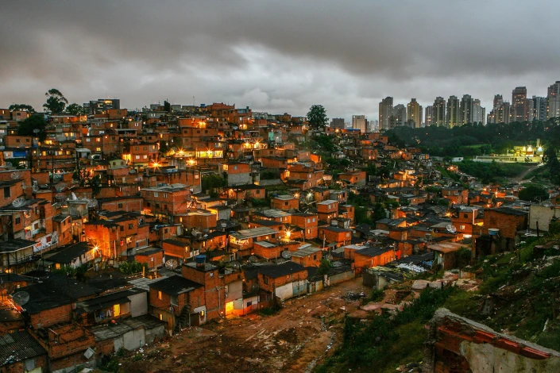

Veganismo não é um movimento para rico
No nosso primeiro contato com o veganismo, não tínhamos referências de pessoas de quebrada que viviam como a gente, com a família desestruturada, trabalhando por um salário mínimo, pegando busão lotado todo dia, sem tempo e sem grana para fazer nada.
Quando nos tornamos veganos não tínhamos a menor condição de comprar hambúrguer a base de planta, salsicha vegana ou queijo vegetal, pois era tudo muito caro e raramente tinha nos mercadinhos. A gente achava que para ser vegano tinha que comprar essas coisas.
No nosso primeiro contato com o movimento através das redes sociais, ninguém falava a nossa linguagem, a maioria só postava pratos sofisticados, roupas e produtos inacessíveis. Essas pessoas estavam mais preocupadas com a estética e com o consumo do que com a importância do movimento.
Além disso, alguns grupos que atuavam pela causa animal utilizavam uma linguagem culpabilizando indivíduos, o que é totalmente prejudicial para qualquer causa. Ao nosso ver, essa atitude ignora a questão cultural do consumo de animais, ignora que a maioria da população só sente que o prato tá completo quando tem a ‘’mistura’’ de origem animal.
Entretanto, o veganismo popular está mudando completamente a cara do movimento pelo fim da exploração animal. É um movimento que está surgindo com muita força, com protagonismo de pessoas periféricas abordando o assunto através de outra perspectiva- com respeito e compreendendo a importância dessa luta, sem ignorar as questões sociais, econômicas e culturais.
Estamos falando de um veganismo preocupado com a exploração humana, que não se restringe apenas aos direitos dos animais. Por exemplo, pra gente que nasceu e foi criado na periferia, é muito difícil entrar na causa animal sem olhar para a realidade, sem enxergar que tudo está conectado de alguma forma.
Não é possível falar da questão animal sem compreender as desigualdades sociais, que afetam, principalmente, os mais vulneráveis no Brasil. Para nós, é muito óbvio, que para uma pessoa mudar um comportamento e compreender algo, ela precisa ter o básico, e no Brasil, o básico já é muito.
O veganismo popular acredita que é possível lutar pelo fim da exploração animal de forma individual e coletiva, questionando a questão cultural de forma coerente e com base na realidade social e econômica do país. Acredita também que, respeitar os animais e poder escolher o que comprar não deve ser exclusividade de uma classe.
Acreditamos que a melhor forma de abordar o tema é sem imposição, sempre tentando mostrar como os animais são desrespeitados por nós humanos, e como a cultura desse consumo hoje é prejudicial e desnecessária.
Jamais iremos usar a insegurança alimentar como ferramenta, ou falar do consumo de animais com base no preço da carne, com base na escassez. Acreditamos que as pessoas precisam ter acesso a tudo, e decidir não mais contribuir com a exploração animal com base na consciência e no nível de informação.
É de extrema importância propagar uma causa focada nos alimentos naturais, valorizando os trabalhadores do campo e apoiando pequenos produtores. Tendo em vista que quem mais sofre com o nutricídio, com as doenças modernas pelo consumo de origem animal, e com a destruição do meio ambiente são as pessoas socialmente vulneráveis.
Atualmente, economizamos muito nas nossas compras, aprendemos a fazer diversos rangos em casa, vários preparos sem leite, sem ovos e derivados. Os produtos de limpeza e higiene não testados em animais, nós encontramos em qualquer mercadinho, e muitas vezes até mais barato que os de marcas famosas que testam em animais.
Valorizamos muito as trocas de ideias, opiniões diferentes e acreditamos que o melhor caminho é compreender a complexidade da realidade e não ignorá-la.
Esse movimento é pautado pelo diálogo, pela informação e, principalmente, pela consciência, e entende que toda exploração tem algo em comum e está ligada de alguma forma, e uma não deve anular a outra.